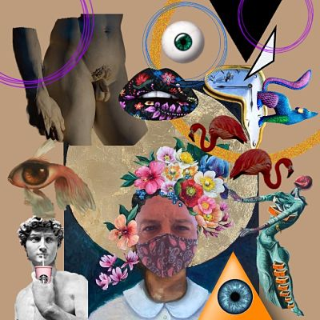
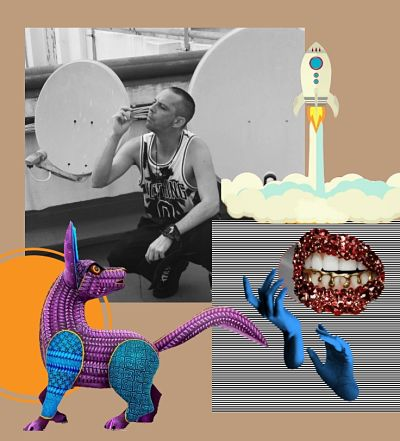

SOBRE MI
Soy un artista plástico que vive y trabaja en la actualidad en Valencia. Originario de Sevilla, donde pase mi infancia y adolescencia, alejado del mundo del arte pero con un arañazo interior profundo y dramático, mientras estudiaba primaria en los años ochenta.
Durante mis estudios de secundarios, de enfermería y auxiliar de vuelo siempre tuve la esperanza de matricularme en historia del arte, pero no conseguí mi objetivo, así que solo mantenía el recortado, visionado y posterior almacenaje de fotos que me volvían loco, pero siempre como hobby y acompañaba mis ratos creativos con música, que ambientaba esas tardes de concentración forjándose en mi un gran melómano. Finalmente me dedique a trabajar como camarero en restaurantes mi ciudad, después en Vigo, Barcelona y Palma de Mallorca donde regalo a mis allegados las composiciones de recortes que encuentro en revistas, pero nada más sin ninguna pretensión.
Mi carrera transcurría en una dirección opuesta al arte, como responsable de los negocios de hostelería consumiendo mi tiempo libre y dando pie a crisis existenciales. Todo se calma cuando delante de mi escritorio imagino como componer con recortes todo lo que mi imaginación va fabricando. Descubro que el collage es dueño de su propio léxico, que es un arma de difusión ideológica con gran impacto visual y que retrata la realidad con atrevimiento y provocación y me permite expresarme con total libertad sin ningún tipo de atadura.
Realizo un cartel publicitario para una firma de ropa que una amiga presentaba en la semana de la moda de Valencia, fue el primer momento en el que me expuse a la opinión pública, y el resultado fue muy favorable, eso supuso el empujón que necesitaba para centrarme más en la creación de collage. Me replanteo mis inquietudes y me involucró en la elaboración de mis proyectos artísticos, dedicando esfuerzo, tiempo libre y sobre todo mucha ilusión.

Pero no fue hasta que me animo mi pareja, cuando empeze a enmarcar las obras que tenía guardadas y almacenadas en distintos rincones. Mi novio me muestra todo su apoyo y empieza a usar la palabra artista para dirigirse a mi, consiguiendo así vencer mi miedo a las críticas y reforzando mi seguridad y autoestima, nace mi marca, “COLLAGENO – INSTITUTO DE BELLEZA EXPERIMENTAL” y empiezo a exponer mi obra en diferentes cafés de Valencia. Observando al público que acude a mis exposiciones descubro que la gente tiene un conocimiento muy pobre del collage, relacionan esta disciplina artística con manualidades y no le dan la importancia que tiene, hasta que ven mis composiciones y el trabajo que hay detrás de cada una de ellas y se empieza a despertar algo entre las personas que admiran mis creaciones.
En la actualidad soy copropietario del restaurante LAS GRECAS y dedico mi tiempo a la gestión del negocio y a mi arte, que lo expreso de diferentes maneras ya sea con la realización de collages, cajas decorativas o en la restauración de muebles dándoles mi toque personal y único.
